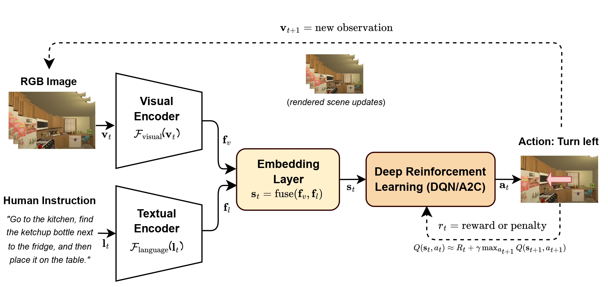

Curriculum-based Deep Reinforcement Learning for Home Robot Navigation with Natural Language Interaction
Advised by Prof. Akihisa Ohya · Submitted in January 2025
Abstract
Human-robot interaction is becoming increasingly important in various aspects of daily life, driving the demand for intelligent robots with navigation and natural language capabilities. This research introduces a novel approach that combines end-to-end deep reinforcement learning with a curriculumbased learning strategy to address this challenge. The proposed method employs Multi-Modal Deep Q-Network (MM-DQN) and Multi-Modal Advantage Actor-Critic (MM-A2C) algorithms to enable robots to autonomously navigate homes, interact with objects, and process users’ instructions, fostering an enhanced human-machine interaction experience. To optimize the learning process, the research designs and evaluates five different curricula, each structured based on its concepts and underlying assumptions. These curricula address specific aspects of robot functionality, such as spatial navigation and natural language understanding. This approach allows the robot to acquire foundational skills individually before integrating them into more complex behaviors. The gradual progression ensures a balance between learning efficiency and adaptability to various tasks and environments. Comprehensive evaluation forms a critical part of this research, focusing on simulations to assess the robot’s performance. Metrics such as accomplishment rate, generalization capability, scalability, and robot behavior inspection are evaluated to validate the approach.
Method
The robot learns an end-to-end policy from what it sees and what a human asks it to do. Visual and language features are combined to guide navigation and object-interaction actions.
Word2Vec + LSTM
MM-DQN / MM-A2C
open, close, break, slice

Curriculum Learning
Instead of learning the entire instruction at once, the robot can progressively build the skills needed for the final task. Different curriculum strategies are compared to study how task progression affects learning performance.
The thesis compares five curriculum designs to study how different task progressions affect learning:
Home Robot Simulation
Experiments are conducted in AI2-THOR, where the robot navigates realistic household scenes, identifies objects, and performs object interactions. The environment provides controlled yet diverse scenarios for training and evaluating multi-step household tasks.
Training environment
Robot perception and task execution
Key Results
Curriculum design has a strong effect on whether the agent can successfully learn complex multi-step instructions. Incremental and Random Curriculum Learning emerge as the most effective strategies across the main experiments.
Full learning curves, random-seed analysis, lighting tests, hyperparameter sensitivity, and detailed curriculum comparisons are available in the thesis.
Robot Behavior
The trained robot executes language-conditioned sequences involving object search, manipulation, navigation, and placement. The learned policy enables the robot to connect multiple subtasks into a complete response to a human instruction.
Bowl Table
Bread Fridge
Vase Trashcan
ICL vs RCL
Takeaway
Related Publication
IEEE International Conference on Cybernetics and Intelligent Systems (CIS), Hangzhou, China, 2024